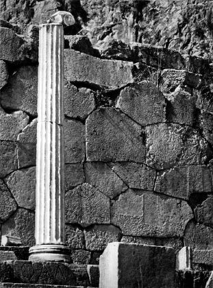
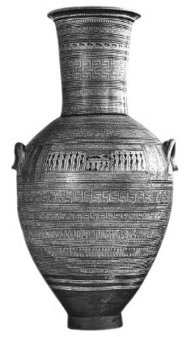
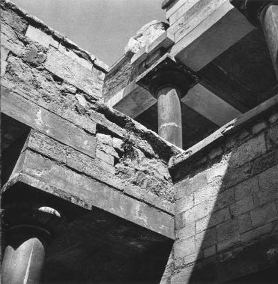
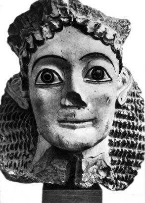

Insanlık tarihinde yeni eylem ve düşünce biçimlerinin bir tür patlama denilecek kadar ani olarak ortaya çıktığı dönemler vardır. İsa’nın doğumundan önce VII. yüzyılın sonunda, Anadolu’da, İonia’da Miletos’lu (Milet-Milas) Thales (Talis) ve okulu ile bilimin –akılcı bilimsel bilginin– ortaya çıkışı böyle olmuştur.
Bilimin bu doğuşu, ilk bilginlerin ve kitaplarımızın dedikleri gibi “filozoflar”ın ortaya çıkışı, parlak diyebilirsiniz, ama hiçbir biçimde şaşırtıcı ve “mucizevi” olmayan bir olaydır. (Filozof sözcüğü Yunanistan’da herhalde ancak sofistler döneminde ortaya çıkmış ve ancak çok daha geç, İ.Ö. IV. yüzyılda, Platon tarafından geniş ölçüde yayılmıştır.)
Doğa karşısında bilimsel tavır takınma, en eski Yunanlılara, hatta başlangıçtan beri en çıplak insanlara yabancı değildi. Odysseus bu sorgucu tavrın tipik örneğidir; zaten bu tavır onun kişiliğinde en doğal, bu arada en kullanışlı dinsel duygularla birleşir. Şair, Odysseus için “makineler yapan” nitelemesini kullanır.
Aslında akılcı bilim ile “efsane”yi birbirini dışlayan zıtlıklar gibi göstermek haksızlık olur. İkisi de sanki uzun süre birbirine karışmamışlar gibi yani! Yine ikisi de, sanki, engelleri, evren’in ve onun bilinmedik yasalarının insanın karşısına çıkardığrı engelleri, farklı yollardan aşmaya çalışmamışlar gibi!
Her tür düşünce önce görüntü ve anlatı oldu; Platon’un Yunan klasik çağının sonuna doğru, düşüncesini açıklamak için hâlâ sık sık efsaneyi kullandığı bilinmektedir. Platon eski efsaneleri kendine göre yorumlar, kendi kafasından bunları uyduruverir.
Öte yandan, yeni doğan Yunan bilimi bizimkine ilk bakışta göründüğünden daha çok benzemektedir. Ne kadar saf biçimde olursa olsun, insanın doğal evrimin ürünü olduğunu bilmektedir; düşünceyi ve sözü toplumsal yaşamın meyveleri sayar, kendini tekniğin bir parçası gibi düşünmektedir: İnsana doğal çevresine egemen olma olanağı veren şey bilimin kendisidir.
Böyle bir bilim anlayışı –son derece cesur bir anlayıştır– Yunanlılarda bütün açıklığıyla İ.Ö. 600 yılına doğru, Thales döneminde görülür.
Bu anlayış iki yüzyılda bugün hâlâ bizi şaşırtan çok geniş (ve büyük) bir bakış açısı ve bu düşünceye tutunmaya özen göstermekle gelişir.
Bununla birlikte, insan türünün çevresindeki ortama karşı kendini savunmak ya da ondan yararlanmak için keşfettiği ilk aletleri onun ellerinde görmek için çok daha eskilere, hatta ilk Yunan topluluğu hakkında bildiğimizin de gerisine uzanmak gerekir. Yay, “makine yapan” Odysseus’tan çok önce, ilk “makine”yi oluşturur. Yayın keşfi aşağı yukarı İ.Ö. 6000 yıllarında, yontmataş çağı sonuna doğrudur. Yay bir enerji yedeği kullanır: Bu bakımdan, tam bir makinedir.
İnsanoğlu, bu kadar düşmanca, bir öylesine bize yabancı ve önceki bölümlerde gördüğümüz gibi, bu kadar “trajik” olan bu dış dünyada, yaşamını kurtarmak için durmadan yeni araçlar keşfeder. Yazgı karşısında bir ahlak, kendince bir yaşama ve ölme biçimi yaratır. Açlığa karşı yeni beslenme biçimleri keşfeder.
Uygarlığın doğması için insanın önceden, gıdasını toplayan bir varlıktan onu büyük ölçüde üretebilecek bir insan yaratmaya olanak veren bazı tekniklere sahip olması gerekmektedir. Her türlü uygarlığın doğuşunun zorunlu koşulu sürekli, kalıcı bir gıda fazlasıdır.
Bu teknikler İ.Ö. 6000-4000 arasında Nil, Fırat ve İndus vadilerinde geliştiler. Bu iki bin yılın yaşamsal bir önemi vardır. Bu geniş teknik devrim, antik uygarlığın maddi temelini oluşturur. İ.S. XVIII. yüzyılın sanayi devrimine kadar, atomun parçalanmasının bulunmasına, nükleer enerjinin bulunmasına kadar uzanıldığında bundan daha önemli bir devrim yoktur.
Böylece insan tarımı keşfeder. Bu buluş bitkilerin çimlenme yasalarını kavramayı, gereksinim sonucu sürdürülen ve yoğunlaştırılan, doğanın yöntemlerini gözlemeyi, kuşkusuz uzun süre verimsiz kalan, ama sonunda başarılı olan taklit çalışmaları ve denemelerinin eşlik ettiği bir gözlemlemeyi açığa vurur. Herhalde öyle bir an gelmiştir ki bu gözlem ve denemeler, ilkel insanları, ertesi yıl daha çok gıda almak umuduyla epeyce bir besin maddesini bilinçli olarak bir yana ayırmaya davet edecek kadar açık, kesin bir bilgi doğurmuştur. Ekim işine bir sürü büyü karışsa, hasadın yanında dinsel şenlikler yapılsa bile ambarlarda tohum yedeğinden başlayıp neşe içinde orakla biçilen yeni tanenin olgunlaşmasına kadar işlerin tümü, insan tarafından kendi hizmetine sokulan bir doğal yasalar bilgisini oluşturur. Bilimin iyi ve şimdilik yeterli tanımı böyledir.
İlkel kabilede tahılın hasadına, saklanmasına, ailenin payına göz kulak olanlar kadınlardır. Tarımın bir kadın buluşu olması olasıdır. Herhalde tarla çapasının bulunmasına kadar uzun süre bir kadın işi olarak kalmıştır.
Madenlerin bulunması da çok büyük güçlükler arasında gerçekleşti. Sonunda yağma savaşı kadar tarım da bundan yararlandı. Madenler ilkin temelde insanın merakını çekmişti: Nadir oldukları için aranıyorlardı. Tunç ve demir, insanlar onlardan silah ve alet yapmadan çok önce, uzun süre yalnız lüks gereksinimleri –Mykenei döneminde altın ve gümüşün yaptığı gibi– karşıladılar. Gerdanlıklarda bakır filizi parçacıkları bulunmuştur. Bu filizlerden çok kolayca indirgenebilen malakit, Mısır’da önemli bir ticaret nesnesiydi; daha hanedan öncesi dönemde cilde sürülecek boya ve düzgün yapımında kullanılıyordu.
Tunç içinde alaşımlanan bakır ve kalay filizleri Akdeniz bölgesinde, Yunan ülkelerinden çok uzak yerlerde bulunuyordu: Kalay Karadeniz’in doğu kıyısında Kokhis’de ve bugün adı Toscana olan Etruria’da vardı. Bu durum gemi yapımının ve denizcilik tekniğinin gelişmesinde çok etkili oldu. Denizcinin yıldızlara ya da güneşin konumuna göre yön bulabilmesi, bir gökyüzü haritasının çıkarılmasını gerektiriyordu.
Demek ki sırasıyla, gerçek anlamıyla bilimin –Thales ve ardılları döneminde astronomi ve geometrinin– doğumundan çok önce insanın bilimsel tutumunun, gözleme yapmaya gösterdiği özenin, doğal yasaları taklit etmek ve onlardan yararlanmak için gösterdiği sabrın başka birçok örneği verilecektir. Bu tutum, sonunda cilalı taş devrinden başlayarak soyumuzun en dikkate değer keşiflerinden bazılarına dek uzanmıştır. Yalnız tarımın bulunması ve madenlerin keşfi değil, önce sadece et yedeği olarak, sonra da çekme işinde kullanılan hayvanların evcilleştirilmesi gerçekleşti. Üzerindekini yuvarlayarak ileri götürülen ağaç gövdesi parçasının yerini alan tekerleğin ve arabanın keşfi, daha sonra ay takvimi ile güneş takviminin keşifleri gerçekleşti. Bilimi, en azından insana doğa üzerindeki egemenliğini artırma olanağı veren bilgilerin ve araçların bütünü olarak tanımlamak gerekirse, bütün bu buluşlar bilim tarihine bağlıdırlar. Ama şimdiye kadar sayılan tüm bu buluşlar, tarihte Yunan halkının ortaya çıkışından çok önce gerçekleştirilmişlerdir. Bununla birlikte Yunan halkı bunları önceki kuşaklarca biriktirilen bir hazine gibi belleğinde saklamış, bunları çoğu zaman iyiliksever tanrılara mal etmiştir.
Demek oluyor ki, bilimler insanların en temel gereksinimlerinden doğmuştur; çiftçilik ve denizcilik gibi teknikler ise bu gereksinimleri karşılamaktaydı. (Bilim aynı zamanda egemen sınıfın lüks gereksinimlerinden doğmuştur.) İnsanların yemek yeme ve giyinme gereksinimleri vardır. İş aletlerini geliştirmeleri gerekir. Kendilerine gemiler yapmaları ve onları nasıl yapacaklarını öğrenmeleri gerekir; denizde yönünü bulacak durumda olmaları, bunun için de yıldızların hareketini bilmeleri gerekir. Gökyüzünde şu ya da bu yıldızın doğuşuyla, köylünün imlemiş olduğu doğru tarihlerde sürüm ve ekim işlerini düzenlemek için de yıldızların hareketlerini bilip izlemek gereklidir.
Ama İ.Ö. VII. ve VI. yüzyılda İonia’da neler oldu? Karışık soylu (Karyalı, Yunan ve Fenikeli) bir halk burada uzun ve çetin bir sınıf mücadelesine girmiştir. Thales’in damarlarında bu üç kandan hangisi, hangileri dolaşır? Ne orandadır? Bunu bilmiyoruz. Çok etkin bir kan. Çok politik bir kan. Bir mucit kanı. (Politik kan. Derler ki, Thales, İonia’nın bu kıpır kıpır ve bölünmüş halkına yeni bir devlet biçimi, bir federal meclis tarafından yönetilen federatif bir devlet oluşturmalarını önerir. Bu çok akıllıca, aynı zamanda Yunan dünyası için çok yeni bir öneridir. Ama dinlenmemiştir.)
İonia kentlerini kana bulayan bu sınıf mücadelesi –Solon zamanında Attika’daki mücadelenin aynısı–, bir yandan da, hem de uzun süre için bu buluşlar ülkesindeki bütün buluşların motoru olmuştur.
Bağ ya da tarla sahipleri; demir işleyen, yün eğiren, halı dokuyan, kumaş boyayan, lüks silahlar yapan zanaatçılar; tüccarlar, gemiciler ve deniz adamları; politik haklar elde etmek için birbirleriyle mücadele eden bu üç sınıf çatışmalarını durmadan yenilenen buluşlar üretmeye götüren yükselen bir hareketle sürüklenirler. Ama, kısa sürede yarışın başına geçenler denizcilerin desteğini alan tüccarlardır. Karadeniz’den Mısır’a ve batıda, güney İtalya’ya kadar ilişkilerini genişleterek eski dünyada yüzyılların karmakarışık bir biçimde biriktirmiş olduğu bilgileri toplayanlar ve bundan düzenli bir yapı oluşturacak olanlar da bu insanlardır.
O halde demek ki İonia, sanat alanında, ekonomi, politika, en sonu bilim alanında ancak dalgın bir göz için tutarsız gibi gözüken birçok buluş ortaya koymuştur ve İ.Ö. VII. yüzyılda hâlâ keşiflerini sürdürmektedir.
“Burjuva” sınıfının doğuş döneminde bildiğimiz biçimlerini alan Homeros şiirlerini hatırlayalım. Ne İlyada, ne Odysseia soylularca yazılmıştır, ne de beyler sınıfı için ya da onların onuruna yazılmıştır. Bu şiirlerin, siyasal başarılarını sağlamlaştırmak için, ellerinden topraklarını almakta oldukları sınıfın kültürünü sahiplenmeye başlayan “yeni insanlar”ın yükselen sınıfı tarafından düzenlenip kaleme alındıklarını bize gösteren gayet açık belirtiler vardır. Kahramanların erdemleri, artık halk tarafından övgüyle yüceltilerek, sitelerdeki özgür halkın yaratıcı coşkusunun hizmetine sunulmuştur.
Bir soylunun piçi, bir köle kadının oğlu olan Arkhilokhos ile hor görülen sınıfın zaferi daha bir açıklık kazanır ve adını takınır. Arkhilokhos lirik şiiri –askerlik, aşk, özellikle de yergi şiirleri– bulur; bu şiiri, gerek bir savaş silahı gibi, babasının kurduğu ve kendisinin savunduğu sitenin hizmetindeki asker-yurttaş konumunun gerektirdiği kılıcı ve kalkanı gibi, özel yaşamının serüvenleri ile bulur.
Lirizm onun çevresinde en beklenmedik, ama her zaman eşsizlikler içinde yepyeni biçimlere bürünerek birden, gür bir biçimde gelişir. Ephesos’lu Kallinos (Kalinos) tehdit altındaki sitesinin duyarsız gençliğine hararetli dizeleri ile şöyle çağrıda bulunur:
“Daha ne kadar uyuyacaksınız?
Ne zaman yiğit bir yüreğiniz olacak, gençler?
Yüzünüz kızarmıyor mu böyle davranmaktan?
Barış içinde sanıyorsunuz kendinizi
Oysa savaş çoktan sarmış ülkeyi...
Herkes ölürken versin son soluğunu!
Şereftir yürümek düşmana karşı
Yurdu, çocukları, karısı için çarpışa çarpışa...
Savaştan, kargı sesinden kaçan erkeği
Evinde de bulur ölüm.
Ne sevgi besler ona ne de halk acır
Ama küçük büyük herkes ağlar yiğide...
Bir kaledir o insanların gözünde.”
Kahraman artık efsanedeki bir Hektor değildir; silah altında yurttaş, daha doğrusu ülkesini savunmaya başlayan gönüllüdür.
Bununla birlikte, hemen yakındaki Kolophon’da (Kolofon), Mimnermos aşkın ve gençliğin hazlarını dile getirir: Mimnermos’un elejileri, sızlanan yakınmacı ağıtları ömrün tükenişini ve ölümün somut ön belirtisi olan ihtiyarlığın, hüzünle yaklaşmasını acı içinde belirtirler.
“Sarışın Aphrodite’siz tadı mı var yaşamın?
Ah! Artık ilgilendirmeyecekse beni
aşkın sırları, ballı armağanlar, aşk yatağı
eşsiz ve güzel çiçekleri gençliğin
öleyim daha iyi...
çıkıp geldi mi acılı yaşlılık
çirkini güzeli karıştıran
artık çekilmez tasalar kalır ancak
yüreğini kemiren, insandır.
Tadına varmaz artık gün ışıklarının
iğrenç görünür çocuklara
önemsenmez kadınlarca
Ah! Ne sefil yaratmış Tanrı ihtiyarlığı.”
Bu, sözcüğün çağdaş anlamıyla bir ağıt lirizmidir. Daha başka şairler de vardır.
Daha önceki bölümlerde karşılaştığımız, gülümsemeleri ile hem ayartan, hem de utanan şu büyüleyici alacalı bulacalı kızlar da Atina Akropolis’ine İonia’dan gelmişlerdir.
Yine aynı şekilde, boyutlarıyla göğü taşıyacak gibi görünen güçlü sütunları ile, kılıç gibi keskin köşeli sütun başlıkları ile, insanın canlı tenine cansız taşın meydan okuması gibi görünen özsuyu ile gerilmiş o ağaç gövdesi sağlamlığı ile Dor tapınağının yalın kütleselliği, bütün bu kurumlu Dor kütleselliği İonia’da birden şıklık, incelik, hoşluk ve tebessüme dönüşür. İon sütununun uzun ve ince oluşu büyümekte olan yeniyetmelerin bedenini andırır. Sütun, başlığını nazik bir çiçek gibi taşır; taç yaprakları hem yumuşak hem katı, insan elleri gibi canlı, sarmal olarak kendi üstüne iki kez dolanan kıvrımlardır.
Sonra, İonia buluşları arasında, sikkeyi, bankayı ve de bonoları söylemeyi unutmayalım sakın.
Yeni kullanım biçimiyle gençleştirilen tüm icatları ya da yaratımları, pırıltılı karmaşıklığı içinde yaşamı keşfetmeye ve ele geçirmeye göz koyan bu değişken halk kendine alıkoyuyordu. İonia dehasının zenginliği bizi şaşkına çevirir.
En onu en inanılmaz, en verimli ve en kalımlı –günümüze kadar, en uzak torunlarımıza kadar kalımlı– tüm bu buluşlar arasında, bilimin doğuşu gelir.
İlk bakışta, Arkhilokhos’un şiiri ile İonia’nın Kore heykelleri ve Thales ile öğrencilerinden gördüğümüz gibi, insanların ne düşündüğü arasında pek az ilişki varmış gibi görünür. Ne var ki bu buluşlar tümüyle aynı toplumsal ortamın, çetin bir mücadele pahasına elde edilen düşünsel özgürlük ortamının ürünüdürler. Bu özgürlük yalnızca bir düşünce özgürlüğü değil, aynı zamanda bir hareket özgürlüğüdür. İonia siteleri bu özgürlüğü kazanmışlardır ve işte güçte her gün onu savunmaktadırlar. Dünyayı reddetme özgürlüğü ya da sadece onu gezip dolaşma, özellikle onu açıklama ve değiştirme özgürlüğü. Arkhilokhos’un işi ile Thales’in işini değişik alanlarda uygulayanlar farklı yapıda insanlar değildirler. İkisi de özgürlüklerini pratik bir iş içinde çalışmakta bulurlar. İkisi de ömürlerinden gerçek nimetler derlemek ister. Toplumsal sınıflarının ve arayışlarının özü maddecidir. Tanrıları yadsımazlar (Tanrı belki de onları her yandan sıkıştıran şu öncesiz ve sonrasız maddeden başka şey değildir.) Ama sürekli tanrılara başvurmazlar; çünkü bilinmeyeni bir başka bilinmeyenle açıklamakla yetinmezler. Dünyayı ve dünyada insanın yerini bilmek isterler. Koca Arkhilokhos ilerde bilimin ve felsefenin dili olacak dili önceden sezerek “İnsan yaşamının gidişini anlamayı öğren” der.
Thales çok basit işlerle uğraşırdı. Tamamen pratik bir amaç güderdi. Hemşehrileri ona bir bilge, Yedi Bilge’den biri dediler. Ama hem ılımlı hem atılgan, nasıl bilgeliktir bu? Yalnız ona mal edilen özlü deyişler arasında dehasını en çok belirten kuşkusuz şu sözdür: “Bilgisizlik, ağır yük.” İçinde yaşadığımız dünyayı anlamak isteyen Thales önce yer ve gök arasında olan ve Yunanlıların Meteorlar (hava olayları) adını verdikleri şeyle ilgilenir. Çünkü Thales bir Yunanlı tüccarlar kentinde yaşar. Araştırmalarında faydacılık ilkesine uyar: Gemilerin yüklerini limana indirmelerini ister, bunun için de yağmurun neden yağdığını, rüzgârların ne olduğunu, onlara bakarak yön tutulacak yıldızların hangileri olduklarını, hangilerinin en değişken, hangilerinin en sabit olduklarını bilmek ister.

Sütun ve çok köfleli taş örgüsü. Delphoi’da Apollon tapınağının
dayanak duvarı. VI. yüzyılın sonu.
Demek oluyor ki bilimin kökeninde pratikten, uygulamadan başka bir şey yoktur. Amaç, denildiği gibi, “bunun işlemesi”dir. Bilim insanın nesnelerle ilişkisinden doğar, duyuların tanıklığına bağlıdır. Algılanabilir gerçeklikten uzaklaştığı olsa bile her zaman ona dönmesi gerekir. Gelişmesinin ilk koşulu budur. Bilim mantık ve bir teori hazırlığını gerektirir, ama en titiz mantığı ve genellikle iddialı teorisi pratiğin sınamasından geçmelidir. Uygulamalı bilim, yeni kurallar üretirken, kuramsal bilime gerekli olan temeli oluşturur.
Thales’in birçok girişimi vardır. Önceki yüzyıllarda Milet iki kez deniz yollarına düşüp buğday ekimi ve maden için toprak aramaya kalkıştı. Doksan koloni ve satış noktası kurdu. Miletli Thales büyük bir gezgindir. Mısır’ı, Ön Asya’yı, Kalde’yi dolaştı, bu ülkelerde eski bilgi kalıntıları, özellikle de gök ve yerle ilgili çok sayıda olgu derledi ve bunları özgün bir biçimde bir araya getirmeyi düşündü.
Yolculukları döneminde Kroisos’un (Krisos) hizmetinde askeri mühendis oldu, tamamen pratik problemler çözmekle uğraşır. Ama o aynı zamanda sınırsız güçte bir yaratıcı zekâya sahiptir.
Thales Mısırlılar ile Kalde’lilerin gözlemine, mesleğini uygulama sırasındaki çalışmalarına çok şey borçludur. Bu olgular derlemesinden yeni bir şeyler yaratacaktır.
İonia’da, şu Eski Yunan dünyasının (Anadolu Yarımadası) Babil’i diyebileceğimiz yerde birçok düşünce akımı, birçok çıkar arayışı birbiriyle kaynaşır. Thales tam bu değişik yönelimlerin bileşkesinde yer alır. O ve hemşehrileri birlikte, bilinmedik bir dünyada yaşama sorununu ve orda yaşamak için neyin bilinmesi gerektiğini araştırmaya kaptırır kendini. Yeni sorular sorarlar. Thales bu soruları kendine özgü bir yönteme göre ve bu konularda henüz alışılmamış bir dille ortaya atar. Tüccarlar da işlerini aynı dille görüşmektedirler. Thales hem tüccar hem mühendistir. Hava olaylarıyla uğraşıyorsa bu, herhalde birtakım öyküler anlatmak için değil, olaylara açıklayıcı nedenleri bulmak, olayların tanıdığı elementlerle hava, toprak, su ve ateşle nasıl olup bittiğini anlamak içindir.
Doğmakta olan akılcı bilim ve Hellen bilimi dünyasının eli altında tutacağı açıklayıcı yöneliş, bu gözlemci denizcilerin, kollarının her hareketine, bu hareketi bir sonucun izlediğine dikkat ederek ve rastlantıya yer bırakmaksızın nedenden sonuca kesin bir bağ kurmaya çalışarak, gemilerini yönetmek için yaptıkları bir sürü hareket ve davranışın sonucunda ortaya çıkmış gibi görünür.
Kuşkusuz, Thales’in araştırmalarında elde ettiği sonuçlar basit, tartışmalı ve çoğu zaman yanlıştır. Ama dünyayı gözleme biçimi, Thales’in akıl yürütme biçimi, gerçek bir bilim adamının düşünme biçimidir. Bu, belki bilim adamı sözcüğünün, bilimle uğraşanların deneye sıkı sıkıya bağlı bir bilim yaptıkları günümüzdeki anlamında değildir elbet. Ama onun tamamen gözleme dayalı bir bilim yaptığı ve gözlediği şeyi efsanelere başvurmadan ve olabildiğince doğrulukla anlattığı daha basit anlamındadır. O bu gözlemler üzerine kendince usa yatkın varsayımlar kurar. Zamanla, deneye tabi tutulacak bir teori sistemi kurar.
Demek oluyor ki, yıldızları tanrı saymak yerine –kendinden öncekiler böyleydi, ondan çok sonra da, Platon ve öbürlerine göre öyle kalacaklardır– Thales onları doğal nesneler olarak görmektedir. Ona göre bunlar topraksı yapıda veya ateş halindedirler. Ayın düz bir çizgi üzerinde dünya ile güneş arasına girerek güneşin tutulmasına neden olduğunu ilkin Thales söylemiştir. Yunan geleneğinin onayladığı gibi İ.Ö. 610 ya da 585 yılındaki bir tutulmayı ya da bir başkasını önceden haber vermiş midir acaba? Belki, Babil’lilerin hesaplarına dayanarak, olası bir güneş tutulmasının yılını bildirmiştir. Astronomi bilgisi o gün için onun daha kesin konuşmasına pek de olanak vermiyordu.
Sonuçlardan çok daha önemlisi onun araştırma yöntemidir. Thales yıldızlarla veya suyla uğraşırken –yineleyelim– tanrıları ve efsaneleri işe karıştırmaz. Onlardan sadece fiziksel ve maddi nesneler olarak söz eder. Modern kimyacı, su nereden doğar sorusunu sorduğunda, şöyle yanıtlar: Hidrojen ile oksijen bileşiminden. Thales’in yanıtı böyle olmaz. Bilgisizlik onun üzerinde çok “ağır yük”tür: O bunun bilincindedir ve bunu belirtmiştir. Yine de suyun kökeni sorusunu sorunca, buna bir efsane ile değil, nesnel biçimde; yani doğanın gerçekliğine uygun ve bir gün deneyle doğrulanabilecek bir doğa yasası kurmaya çalışarak karşılık verir.
Böylesine yeni tür bir düşünce, onun girişimlerini düşünürsek bazen cesaret ister: Bu yüzden de saf görünebilir. Thales ve İonia’lı ilk bilginler, dünyanın hangi maddeden yapıldığını keşfetmeye çalışırlar. Onlara göre dünyada bir element –hem de maddi bir element– olması gerekmektedir; geri kalanlar, eski kozmogonilerdeki gibi, hiç de efsanevi değil, maddi bir süreç sonucu ondan türemiştirler. Thales’e göre, ilk başta su vardı ve temel madde olan sudan, onun tortusu konumundaki toprak ve de suyun buharları, buğuları olan hava ve ateş doğmuştur. Her şey sudan doğar ve her şey suya döner.
Daima aynı kalırken, başka bir görünüme bürünerek bir elementten öbürüne bir dönüşüm düşüncesini belki de ateşle ilgili teknikler esinlemiştir bilginlere. Onlar, ateşin eylemi sonucu meydana gelen çeşitli etkileri gözlemlediler. Ateş suyu buhara dönüştürmektedir. Falan maddeyi kül haline getirmektedir. Dökümcülük tekniğinde katı maddeyi sıvılaştırır. Metalürjide ayırır ve temizler. Lehimde ve alaşımda, tersine, birleştirir. Böylece, insan kendi tekniklerini gözleye gözleye elementlerin ya da onların görünüşlerinin dönüşümü kavramına varır. Ama bu gözlem acısız sürmez. Ateş sadece büyük bir eğitici değil, aynı zamanda kan, ter ve gözyaşı isteyen acımasız bir zalimdir. Mısırlı bir yergi şairi şöyle yazar:
“Demirciyi gördüm çalışırken fırının ağzında,
parmakları sanki timsah derisi;
balık sütü gibi pis kokar.”
Emek payını içeren böyle bir gözlem, teorinin oluşumunda yanlışın payını da içerir.
Öte yandan, öbür elementlerin kökeninin su olduğu düşüncesini Thales’e birtakım basit doğal olaylar da esinlemiş olabilir. Suyun mil bırakması olayı (örneğin, Nil’in taşkınlarında ve Delta’nın oluşmasında) ya da denizden doğan sislerin oluşumu ya da belki gölcükler üstünde kımıldayan birtakım parıltılar –bütün bunlar bilginin dikkatini çeker. Önemli olan şu ki bu bilgin doğayı ya da insanın kullandığı teknikleri gözlemeye başlamış, hem de her türden doğa üstü açıklamadan kurtulmuştur. Bilgin bu gözlemleri yapar ve gözlemlerini, örneğin, çok önemli bronz heykel dökümcülüğü tekniğinde doğrularken, çok daha sonra, deneysel yöntem adını hak edecek işin ilk adımlarını atar. Bu henüz ancak bir mırıldanma, ama yeni bir dilin başlangıcıdır.
Aynı dönemlerde, aynı İonia bilginleri ve özellikle aynı Thales, insanların başlangıçtan beri başkasından daha iyi egemen oldukları bir başka bilimsel yöntemin keşfini gerçekleştirdiler. Bu, geometri biçiminde gösterilen matematik yöntemidir.
Dipylon (Gipilon) (İ.Ö. VIII. yy.) vazoları daha o zaman Yunanlıların geometrinin soyut biçemine karşı tutkusunu gösterirler. Bu doğrusal süslemeye karışan kişilerin –insanlar ve atlar– kendileri geometridirler: Bir araya getirilmiş üçgenler ve daire parçaları!
Ama sonunda, geometrik biçimlerle imgeleri çoktan sarılmış olan Yunanlılar, her zamanki gibi, belirgin tekniklerden başlayarak bu bilimi keşfederler. Doğulular, Asurlular ve Mısırlılar, matematik bilimi olacak şeyin ilk halini oluşturmuşlardır.
Örneğin Mısırlılar bir mil tabakası altında tarlalarının sınırlarını silen Nil’in taşmasından sonra bunların boyutlarını yeniden bulmak için böylesi geometri teoremlerinin keşfine başlangıç olabilecek birtakım ölçme yöntemlerini biliyorlardı. Dik açısının kenarları 3 ve 4 olarak ölçülen, hipotenüsü ise 5 olarak ölçülen bir dik üçgende, dik açının 3 ve 4’lük kenarları üstüne kurulan karelerin birlikte, hipotenüs üstüne kurulan kare ile aynı alana sahip olduklarını böyle biliyorlardı. 3x3’ün 9, artı 4x4’ün 16 olduğunu, aynı şekilde 5x5’in 25 ettiğini bildikleri için bunu biliyordu ve bunu yer üstünde ölçüyorlardı. Ama bu önermenin herhangi bir dik üçgende doğru olduğunu bilmiyorlardı ve bunu kanıtlamakta yetersizdiler. Geometrileri henüz gerçek anlamıyla bir bilim değildi.
Yüzyıllar boyunca matematik yöntem haline gelecek şey ancak bir kurallar derlemesiydi. Bu kurallar bazen çok da karmaşıktı ve örneğin, kimi durumlarda yıldızların konumunu önceden bildirmeye olanak veriyorlardı. Bununla birlikte, bu kurallar toplamı, bir bilim oluşturmuyordu. Bunlar kendi aralarında bağıntılı değildiler, ancak özel hallerle ilgiliydiler ve kimse onların deney yoluyla kendini zekâya kabul ettiren birtakım basit kurallardan doğduklarını göstermeye çalışmıyordu. Örneğin: “Bir noktada öbürüne giden en kısa yol doğru çizgidir.” Kimse bu kuralların doğanın yasaları olduğunu ve zorunlu olarak kural olduklarını ortaya koymuyordu.
Yunanlılar geometrilerini başlıca şu iki nedenle geliştirme gereğini duydular: Denizcilik (ve elbette, o dönemde, oyma kayıklar ya da ilkel sandallardan ibaret olmaktan çıkmış gemilerinin yapımı), ve öte yandan, tapınaklarının yapımı.
Bize söylendiğine göre, Thales bir gün tam da tapınak sütunları için kasnak yapımı ile ilişkiliymiş gibi görünen bir geometrik buluş yaptı. Bir yarım daire içinde yer alan açının bir dik açı olduğunu göstermekle kalmayıp, zorunlu olarak bunun böyle olması gerektiğini, yani bir yarı-çemberin uçları onun noktalarından herhangi biri ile birleştirilirse bu iki çizginin her zaman bir dik açı yapması gerektiğini de gösterdi.

Geometrik stil amfora
(yükseklik 1.55m). VIII. yüzyıl.
Aynı şekilde Pitagoras (ya da onun okulu, ya da bir başkası, ama eski bir tarihte) dik üçgenin hipotenüsü üstünde kurulan karenin, üçgenin boyutları ne olursa olsun, zorunlu olarak öbür kenarlar üzerinde kurulan karelerin toplamına eşit olduğunu gösterdi. Doğuluların özel durumları, böylece geometrik şekillerin evrensel özellikleri oluyorlardı. Demek oluyor ki Yunanlılar, bizimki de olan ve içinde doğruların, dairelerin ve başka bazı eğrilerin özelliklerinin savunma yoluyla tanıtlanabildikleri ve teknik uygulamalarla doğrulanabildikleri bir geometri bilimi yarattılar. (Ve ben özellikle onların bu yoldan az görülür bir sağlamlık ve güzellik derecesine ulaştıkları mimarlığı düşünüyorum.)
Yunanlılar bu şekilde, yapı sanatı ve denizcilik ile bağıntılı olarak bir geometri bilimi kurmuş oluyorlardı. Thales ile ilgili, eskiden beri süregelen bir inanış, kıyıda yüksek bir noktadan itibaren, açık denizdeki bir geminin kıyıya uzaklığının çok somut ölçüm bilgisini ona mal etmektedir. Aynı inanış, yapısı yalnızca bu mesafeyi ölçmeye olanak veren şekillerin özelliklerine ilişkin, bu kez soyut ve usa dayanan geometrik bilgileri de ona mal eder.
İşte bu bilim, uzaklarda, deniz yolculuğuna çıkmak için gemiler, tanrılarının şanı kadar sitelerinin şanını da ünlendirmek için tapınaklar isteyen bir tüccarlar sınıfının yapıtıdır.
Bu koşullarda kurulan bilim, açık bir biçimde bir hümanizmadır. İnsanlar bu bilim sayesinde, doğanın düzensiz görünümü içinde yer alan kesin yasaları okuyabilirler. Bunu yapabilirler ve bu yasalardan yararlanmak isterler. Demek ki, doğan bilim, ilkesi ve niyeti bakımından, yararcıdır. İnsanlar onu bir alet gibi kavrarlar.
Thales’in büyüklüğü temelde “filozoflar”ın ilki olmaktan ibaret değildir. (İstenirse, evet, ama o dönemde bilim ile felsefe arasındaki sınır henüz çok oynaktır!) Öncelikle, ne olursa olsun, doğaya, “physis”e (Fisis) sıkı sıkıya bağlı bir “fizikçi”dir. Her şeyi doğadan bulur, onun dışında bir şey aramaz. Maddenin terimleriyle düşünür: Bir maddecidir o. Kuşkusuz, Yunan düşünürleri henüz madde ile ruhu ayırt etmiş ya da ayırmış değildiler. Ama Thales’te ve okulunda madde o kadar değerlidir ki, onlar maddeyi yaşamla bir tutarlar. Onlar için her madde canlıdır. Öyleyse bu bilginlerin sözcüğün modern anlamında “maddeci” olmadıklarını söyleyelim, çünkü onlar için maddi ile maddi olmayan arasında fark yoktu. Ama bir idealist olan Aristo’nun onları materyalist olarak tanıtmış olması anlamlıdır. Onlar ilk materyalistlerdir. Daha sonra, Yunanlılar, bu eski İonia’lılara, hylozoistler adını takıyorlardı; yani maddenin canlı olduğunu düşünenler ya da yaşamın –ya da ruhun– dünyaya maddeden başka şeyle gelmediğini, maddenin içinde olduğunu, hatta maddenin davranışı olduğunu düşünenler...
Demek ki, bu düşünürler evrenden söz ediyorlar ama tanrıları akıllarından çıkarıyorlar. Onlara çok uzak olmayan bir yerlerde –zaman ve mekân bakımından– dünyanın yaratılışı Uranos (Gök) ile Gaia’nın (Gea) (Toprak) çiftleşmesiyle açıklanıyordu. Bunun ardından gelen her şey, tanrı ve insan kuşakları, mit ve mitoloji olarak, “gereğinden fazla insan” niteliğiyle kalıyordu. Thales’e göre gök içinde gemileri ilerleten ve kentin tapınaklarının sütunlarını yükselten üç boyutlu bir uzaydır. Toprak suyun bıraktığı, suyun beslediği, tekrar suya dönen şu baştan beri var olan balçıktır...
Bu toprak ve su açıklaması (toprak sulardan ayrı tutulmuştur) bir Sümer söylencesinden alınmış gibidir: Bir yaratılış ya da tufan öyküsüne benzer. Babil kozmolojileri bütün ülkelerin denizlerle kaplı olduklarını söylerler. Tanrı Marduk suların üstüne çamurla kapladığı sazdan bir sal koymuştur. Thales de başlangıçta her şeyin su olduğunu belirtti, ama o toprağın ve bütün varlıkların sudan, doğal bir süreçle oluşmuş olduklarını düşünüyordu. Gerçekten Thales, belki de varsayımını ilkel bir doğu mitolojisine, Tekvin’e de yansıyan mitolojiye borçludur. Ama efsane Yunanlaşırken durulmuştur. İncil’in ilk bölümünde henüz yaratılmamış dünyada suların üstünde yüzen Tanrının Ruhuna ne oldu? Marduk’a ne oldu? Tanrı’ya ne oldu? Tufan bölümünde Nuh Peygamberle konuşan Tanrı’nın sesi ne oldu? Bütün bunlar metafizik bir düş gibi dağılıp gitti. Yaradan, yolda kayboldu.
En azından bilimden, bu kez aralarında mantıksal bağlar olan ve her zaman geçerli yasalar oluşturan önermeler toplamı’nı anlamak gerekirse, Thales’in önermelerinin hem akılcı hem de evrensel niteliği onu bilimin ikinci kurucusu yapar. Aristo daha sonra şöyle diyecektir: “Bilim ancak genel olanda vardır.” Bu, yukarda belirtilen tanımdan daha dardır, ama Thales’e insan konusundaki bilgilerin tarihçesi içinde daha iyi bir yer verilmektedir.
Thales ile birlikte efsaneler zinciri bir zaman için kopar. Yeni bir tarih başlar: Kesin ve akılcı görünüşüyle, evrenselliği içerisinde düşünülen bilimi keşfeden insanların tarihi.
En sonu, bazı günümüz araştırmacılarının Thales’e mal ettikleri, doğanın hem akıllı hem de bilinçsiz olduğu yolundaki şu görüşü belirtmek gerekir mi? Sonraki yüzyılda, Hippokratesçi hekimliğin, böylesi bir düşünceden hareketle çıkarabileceği yararları görürüz. İnsan organizması ile, bütünü ile ele alındığında, doğa arasındaki sıkı benzerliği gözleyen hekimlik, gerçekten de insan organizmasının, olanları bilmeksizin ve insanın istenci dışında kendiliğinden, bunları mutlaka daha iyi yapacağını saptar. Yaraların kapanmasında, kırık kemiklerin kaynamasında, hiç de sanat işi olmayıp doğanın kendiliğinden işlettiği sağaltıcı tepki olaylarında hekimliğin saptadığı durum budur.
Demek ki tıp bilimi de bir ölçüde Thales’den türeyebilecektir.
Thales’in araştırması tek başına bir araştırma değildi. Bilim ancak araştırmacıların işbirliği ile ilerler. Thales’in harekete geçirdiği bu araştırmacılara kendisine dendiği gibi fizikçiler derler. Bunlar olumlu ve yararcı bir anlayışla doğayı gözlerler. Gözlemleri derhal deneye başvurur. Gecikmeden birkaç ad sıralayalım.
Olsa olsa Thales’den daha genç bir kuşaktan olan Anaksimandros, zekâsının bir yönüyle çok dikkatli bir teknisyendir: İlk coğrafya haritalarını o hazırlamıştır; bir güneş saati yapmak üzere Babil’lilerin icat ettiği mili ilk o kullanır. Güneş saati milinin düz bir yerde toprağa dikey olarak dikilmiş, gölgenin gösterdiği değişmelerle tam öğle vaktini, gün dönümleri ile gece-gündüz eşitliğini ve ara tarih ve saatleri gösterebilen bir demir çubuk olduğu bilinmektedir. Anaksimandros bununla bir polos yaptı ki, bu ilk saatti.
İonia’nın Persler tarafından ele geçirilmesinden sonra bu ülkeden sürülen Ksenophanes (Ksenofanis), İtalya’ya gitti. Açık alanlarda Doğa üstüne adlı şiirini yüksek sesle okuyan gezgin bir şairdir o. Bu şiirde geleneksel mitolojiyi eleştirir ve insan biçimli tanrı anlayışıyla alay eder. Ksenophanes şu şaşırtıcı cümleyi yazar: “Öküzlerin, atların ve aslanların elleri olsaydı ve resim yapmayı, heykel yontmayı bilselerdi, insanların onları kendi suretlerinde canlandırmaları gibi, onlar da tanrılarını öküz, at ve aslan biçiminde canlandırırlardı.” Bu Ksenophanes, merakı çok değişik ufuklara açık bir bilgindi: Bu merak onu, dağlarda deniz kabuklularının varlığını, Malta’da, Paros’ta, Syrakusai taş ocaklarında balık fosillerini keşfetmek gibi, çok önemli keşiflere götürdü.
V. yüzyılda Anaksagoras ve Empedokles (Embedoklis) gibi bilginler bu yolda daha da öteye gitmiş olmalıdırlar. Birincisi her türden astronomi ve biyoloji olaylarıyla ilgilendi; Karadeniz’de parelilerin[2] –bu tuhaf ışık olaylarının– varlığını fark etti ve bu olguyu açıklamaya çalıştı; Nil’deki kabarmaların nedeni ile uğraştı. Empedokles yenilerde bir “gerçek Bacon habercisi” diye nitelendirildi: Birçok doğal olayı, örnekleme yoluyla açıklamak için özgün deneyler düşünmüştür. Çok ustalık gösteren bu girişimler bilimsel deneyin doğuşunu ortaya koyarlar.
Öte yandan, yeterli metin olmadığı için bizce iyi bilinmeyen Thales ardıllarının tüm bu çabaları, fizik alanında, İ.Ö. V. yüzyılın iki büyük keşfine yardım ettiler. Birincisi, içinde güneşin bir günde hareketini tamamladığı ya da tamamlamış gibi göründüğü plana oranla eğik olan bir plana göre, gökküre üzerinde güneşin yıllık hareketinin kesin bilgisidir. İkincisi ise, V. yüzyıl sonlarında yaşamış kimi bilginin zaten bildiği, müzik aralıklarının matematik değerle belirlenmesidir.

Knossos, mimarlık. İkinci binyıl.
İşte, çok kısaca açıklanan, Thales’in yakın ardıllarının bilimsel bilançosu budur.
Yaygın gelenek işte bu dâhi Thales’i, her akşam yıldızları taramakla uğraşırken, aksilik, bir kuyuya düşünce gelip geçenlerin ve hizmetçi kızların takılma ve alaylarına teslim eder. Bu alaycı öykü Aisopos (Esopos) masallarında görülür, Platon’da da rastlanır. Montaigne şöyle söyler: “Sürekli gök kubbeyi izlemekle meşgul filozof Thales’i, ayağı dibindekileri görmeyip, düşüncesini bulutlarla oyaladığı konusunda uyarmak için... yolu üzerine tökezleyip düşeceği bir engeller koymuş olan şu Miletoslu kıza minnet duyarım.”
La Fontaine de onu şöyle uyarır:
“Zavallı aptal,
Zar zor görüyorsun ayaklarının ucunu,
Peki, nasıl okuyacaksın yukarısını?”
Zavallı ve şanlı Thales! Senden daha çok kim basabilmiş ayaklarını sımsıkı yere?
Bilim, insanların çetin kazanımı: sağduyuya meydan okuma, sağduyunun alay konusu.
İonia düşüncesi ve Thales okulu, sürekli karşılıklı olarak değişim halindeki maddi öğelere dayanan bir dinamik dünya anlayışına yönelmişti.
İonia materyalizmi sürekli hareket ve değişim halinde, hep sonsuz bir madde kütlesi olarak tasarlanan doğa hakkında doğru ama saf bir sezgiden doğar.
Bu sezgi (o dönemde tanıtlamalı bilimsel bilgi değil, ancak sezgi söz konusu olabilir) İ.Ö. V. yüzyılda Demokritos tarafından yine sezgiyle yeniden ele alınıp açıklanmıştır. Demokritos’un materyalizmi onu Thales’den ayıran yüzyılda, kendisine göre durgunluk ve hareketsizlikten başka hiçbir şeyin varolmadığı Parmenides okulu ve her şeyin değiştiğini ve geçip gittiğini söyleyen Herakleitos tarafından tartışılmış olduğu için tarih içinde daha büyük bir dayanılmaz güç kazanır. Demokritos hem Parmenides’e hem de Herakleitos’a karşılık vererek, hem durgunluğu hem de değişimi aşarak cevabını bulur ve doğaya ilişkin sistemini geliştirir. Bu tartışmaların ayrıntısını bir yana bırakalım ve Demokritos’un bu sistemini açıklamaya çalışalım.
Bir yandan da bu çok güç bir iş. Elimizdeki Demokritos metinleri inanılmaz ölçüde eksik. Demokritos’un yapıtı son derece genişti ve insan konusunda edinilen bilginin bütün alanlarını kapsıyordu. Bugün elimizde onun eksiksiz tek bir yapıtı bile yoktur; oysa Platon’un daha çok değil ancak o kadar geniş yapıtının tümü, hatta gerçek yapıtlar toplamı arasına, birtakım kırma yapıtlar karışmış olduğu için, tümünden biraz fazlası elimizdedir.
Demokritos’un yapıtları ile Platon’unkiler arasında geleneğin yaptığı bu davranış farklılığına basit bir rastlantı demek güç. Eskilerin bu konuda bize aktardıklarına körü körüne inanacak denli ileri gitmeyelim. Onlar yerli yersiz konuşup, Platon’un elinden gelseydi Demokritos’un tüm yapıtını ateşe atma isteğini saklamadığını söyleyip duracaklardır. Böyle konuşanların gizli bir dilek olarak kalmış bir niyeti Platon’a yüklediklerini söyleyelim. Açıkça veya üstü kapalı dile getirilen bu dileğin yüzyıllar tarafından gerçekleştirilmiş olması şaşırtıcıdır. Takvimimizin III. yüzyılından itibaren Demokritos’un yapıtlarının izlerini bulmak bizim için güçleşir. Daha sonra, Hıristiyan Kilisesinin antik elyazmalarına karşı kıyımlarının –bunlar İ.S. VI, VII ve VIII. yüzyıllar olmak üzere üç yüzyıl süren kıyımlardır– çoktan materyalizmin babası ilan edilen bir yazar hakkında özellikle katı olduklarını tahmin edebiliriz. Kilise’nin bu şekildeki kıyım ve takibi, teolojisinin önemli bir bölümünü kendisinden aldığı idealist okulun kurucusu Platon’a karşı, tersine, çok hoşgörülü olmak zorunda kalmıştır.
Sonuç ortadadır. Biz Demokritos’u ancak çok önemsiz, bazen karanlık ve hatta kimi hallerde çarpıtılmış olarak düşünebildiğimiz alıntılarla tanırız. Bu büyük filozofu rakiplerinden ya da rastlantıyla, kuşkusuz doğabilimci sıfatlarıyla onu madde dünyasına duyurmaya daha eğilimli olan Aristoteles ve Theophrastos’un (Teofrastos) ağzından pek duyma imkânımız yoktur.
Demokritos İ.Ö. 460 yılına doğru Trakya’da deniz kıyısında bir Yunan kolonisi olan Abdera’da doğdu. Bu durum Cicero’nun, Demokritos’un tanrılar hakkında söylediğinin yurduna daha bir yaraştığını (eskilere göre Abdera aptallık krallığının başkentidir) söyleyerek dalga geçmesine olanak verir.
Demokritos sonradan kendisinin geliştirdiği duyumcu materyalizmin hemen hemen tanınmayan babası Leukippos’un (Lefipos) (bu kez de elde hemen her tür metinden yoksun pek az bilgi vardır) Abdera’da derslerine katıldı.
Bütün büyük Yunan düşünürleri gibi Demokritos da büyük bir gezgindi. Bize onun Hindistan’da gymnosophistes’ler[3] (Gimnusofistes) ile görüştüğü anlatılırsa omuz silkmeyelim: Doğu bilgeliğinin bu garip tanıkları her zaman Yunanlı filozofları çok düşündürmüşlerdir. Demokritos Mısır’da rahiplerle görüşmüş ve ayrıca Etyopya’yı da görmüştü. Platon da daha az gezmedi. Yunan bilgeleri –Sokrates bir yana, o bununla övünür– her zaman dünyayı çok dolaştılar ve bu gezip tozmalarından çok şey edindiler. Demokritos’un ansiklopedik bilgisi Mısır’da kimya ile ilgili deneysel yöntemler, doğal tarih konusunda doğru ya da yanlış ama bol bilgiler ve Kaldeliler ya da yine Mısırlılardan matematik ve astronomi ile ilgili bir yığın temel kavramlar toplamıştır.
Bu yolculuklar hakkında bize verilen bilgiler yanlış olabilir. Ama dünya ve insanlığın geleceğine ilişkin görüşlerinin son derece açık olduğuna şaşmadan filozoftan kalan bölük pörçük parçaların çoğuna değinmek olanaksızdır. Demokritos’un yapıtından; öbür lanetli düşünürlerin, Epikuros ile Lucretius’un (Lukritios) yapıtından olduğu gibi, sert ve ısıran bir hava –şafakta tepelerde esen, tende donmuş, yürekte coşan o hava– esip geçer. Bu materyalistler aslında en sert bir biçimde içimize işlerler. Açtıkları yara boş değildir.
Eskilerin dedikleri gibi, Demokritos hemen “her konuda yazmış”tı. Yapıtları elimizde yoksa da, bunların bir isim listesi elimizdedir: liste bu iddiayı doğrular. Demokritos matematik konusunda yazmıştı (Demokritos’un matematik buluşlarından örnekler veren Arkhimedes’in (Arhimidis) tanıklığına göre bunlar dikkate değer kitaplardır). O dönemde hemen hemen tek yapılmış, teşrihi[4] gerçekleştirmiş bilgin olarak sözünü ettiği biyoloji hakkında yazmıştı. Fizik ve ahlak üstüne, filoloji, edebiyat tarihi ve müzik üstüne yazmıştı. Özellikle de doğanın sistemini irdeleyen yazılar kaleme almıştı.
Çok yaşadı, doksan yaşını geçmişti, hatta rekor heveslilerine göre yüz yaşına erişti. Bu rakamlar onu İ.Ö. IV. yüzyılın ikinci çeyreğine kadar yaşatmaktadır.
Demokritos dünyada şu büyük mü büyük atom sözcüğünü ortaya ilk atan kişidir. İlkin bunu bir varsayım olarak öne sürer. Ama bu varsayım onun öncelleri ve dönemi tarafından ortaya atılan sorunlara başka herhangi birinden daha iyi karşılık verdiği için, öne sürdüğü bu sözcük yüzyılları aşmaya yönelmiştir. Modern bilim onu yeniden ele almıştır ve bu bilim onu daha geniş bir anlamda kullansa, atomun iç yapısını açıklayacak durumda olsa bile, Demokritos’un o kendiliğinden sezmiş olduğu atomların varlığından çok şey üretir.
Modern bir bilgin olan fizikçi J. C. Feinberg, Demokritos’un denebilirse, atom öngörüleri ile Einstein’inkiler arasındaki şaşırtıcı koşutluğu gösterir. Feinberg bu konuda şöyle yazar:
“Einstein, 1905 yılında, birinin bir atomu parçalayıp maddeyi yok etmeyi başarmasından yıllar önce, yalnız kâğıt, kalem ve beyni ile maddenin yok edilebileceğini ve bu olurken korkunç enerji miktarlarını açığa çıkaracağını önceden haber veriyordu.”
“Demokritos, milattan önce V. yüzyılda, bilimin bir maddenin iç yapısını keşfetmeyi öğrenmesinden yüzyıllar önce yani, yalnız bir balmumu tableti, bir şiş ve beyni ile her maddenin atomlardan oluştuğunu daha o zamanlardan haber veriyordu.”
Demek ki Demokritos, sisteminde, bir yanda atomlar, öte yanda boşluk olmak üzere yalnızca iki temel gerçeklikten yola çıkmaktadır. Boşluk konusunda şunu belirtelim ki doğada boşluğun olduğuna ilişkin bu varsayım bugün tümüyle tanıtlanmıştır. Gerek filozoflar gerekse bilginler uzun süre kesin olarak şunu söylüyorlardı: “Doğa boşlukla uyuşmaz.” Gerçekte kendilerine özgü olan bir boşluğu doğaya mal ediyorlardı. Bugün atomun içerisinde olduğu gibi atomlar arasında da boşluk bulunduğu kabul edilmekte ve kanıtlanmaktadır. Profesör Joliot-Curie şöyle yazar: “Maddenin içinde büyük boş alanlar vardır. Maddeyi oluşturan parçacıkların boyutlarını düşünürsek, bu boşluklar gezegenlerarası aralıklarla karşılaştırılabilir.”
Demokritos tarafından atomlar şöyle tanımlanır: Bölünmez (atom bölünemez demektir: Demokritos atomun parçalanması olanağını kabul etmiyordu), çözülmez sağlam cisimcikler. Sayıları sonsuz ve kalıcıdırlar. Boşlukta devinirler. Bu hareket onların dışında gelişmez. Hareket madde ile birlikte vardır: Madde gibi, asıldır. Atomların birbirinden farklı, belli bir biçim ve boyutlarına bağlı bir ağırlıktan başka özellikleri yoktur.
Duyularımız aracılığı ile nesnelerde algıladığımız özellikler Demokritos’a göre tamamen özneldirler ve atomlarda yokturlar. Demokritos nicelik kavramından hareketle daha sonra bundan algılanabilir nitelikler sonucunu çıkarmak üzere bir doğa bilimi kurmaya çalışmak onurunu kazanmıştır.
Demek ki, atomlar matematik değil, bizim duyarlı algılayışımızdan kaçabilen son derece küçük maddesel noktalardır. Bunlar bilim adamlarınca ayrıştırılan ve yararlanılan yapılarına karşın bugün de biz bunları algılayamıyoruz.
Bu atomlar durmadan kıpırdanırlar, evrende ne yüksek ne alçak ne orta ne son olmaksızın, “her yönde çarpışırlar”. Demokritos’un bu iddiasında onun kendiliğinden sezgisindeki doğruluğun en açık belirtilerinden biri vardır. Ona göre doğa bir “her yönde atom sıçraması”dır. Bunların yörüngeleri “kesişmek”ten geri kalmaz; öyle ki “değinmeler, sarsıntılar, zıplamalar, vurmalar ve çarpışmalar ve de girişmeler” meydana gelir.
Demokritos’un “doğa sistemi”nin hareket noktası böyledir! Hem saf hem de kesin bir materyalizm; yazarın hiçbir tanrısal karışıma gerek duymadan dünyayı en nesnel biçimde açıklamak için büyük bir çaba harcadığı bir öğreti. Demokritos’un öğretisi aslında, İonia’lı eski maddecilerden sonra, Yunan İlkçağının gerçekten tanrıtanımaz ilk öğretisidir.
İçinde yaşadığımız dünya böyle kuruldu. Çok büyük sayıda atomlar küresel bir kütle oluşturdu; bu kütlenin içinde en ağır atomlar kürenin merkezinde yer alırken en uçucu olanlar kürenin yukarılarına atılırlar. En ağır atomlar toprak kütlesini meydana getirdiler, ama bu toprak kütlesi içinde ağırlığı daha az atomlar toprak yüzeyinin çukurlarında yerleşik kalan suları oluşturdular. Yine daha hafif başka atomlar ise soluduğumuz hava küreyi meydana getirdiler.
İçinde yaşadığımız dünyanın, yani Yer’in, Demokritos’a göre uzayların sınırsız genişliğinde oluşan dünyalardan yalnızca biri olduğunu ekleyelim. Kendi güneşleri, gezegenleri ve yıldızları olabilen, oluşmakta ya da yok olmakta olabilen, sonsuz sayıda başkaları da vardır.
Böyle bir dünya açıklaması hiçbir yaratılış düşüncesi, dünyanın doğuşu ve korunmasına ilişkin hiçbir doğa üstü müdahale içermez. Sadece madde ve hareket vardır.
Kimi çağdaşlarımızın bunu savunmalarına karşın, biz Demokritos’ta mekanist bir öğreti ile karşı karşıya da kalmayız. İ.S. XVII. ve XVIII. yüzyılların filozoflarının görüşlerine benzer mekanist görüşlerin ona mal edilmesi işi hafife almaktır. Bir kez, Demokritos’un o, doğal benzerin benzeri çekme ilkesi gibi, hiç de mekanist olmayan açıklamalar yaptığı olur. İkincisi, onun zamanında mekanik bilgiler embriyon evresindedirler ve dünya görüşüne henüz bilimsel bir temel sağlayamazlar. Demokritos’un materyalizmi bir sezgi materyalizmi, bir fizikçi varsayımıdır; hiç de metafizik bir materyalizm değildir. O, ya hareketin varlıkla bağdaşır olmasına karşı çıkan, ya da sofistler gibi göreceliğin çelişkileri içine gömülen zamanın filozoflarına karşı, dış dünyanın nesnel gerçekliği ve maddenin yok edilemezliği tezini savunan doğa sistemini öne sürdü.
Demokritos’un atom varsayımının doğruluğu anlaşılmıştır. Ama o bu varsayımı bilimsel olarak kuracak durumda değildir. Bir açıdan dönemin bilimince yeterince desteklenmeyen, öte yandan modern bilginlerin yararlandıkları gözlem aletlerinden yoksun, nesnel olarak yerleşik olgulardan inanılmayacak kadar yoksun olan Demokritos’un materyalizmi, bu materyalizmin kendisi, üstüne aldığı dünyayı açıklama görevini yerine getirmekte çok yetersiz kalır.
Bununla birlikte, böyle bir düşünce belirten Engles, şunu da ekler, “Sonraki tüm metafizik hasımlarına karşı onun üstünlüğü de (Yunan felsefesinin üstünlüğü) bundandır. Ayrıntıda, metafizik Yunanlıların karşısında haklı çıkmışsa da, bütün olarak ele alındığında, Yunanlılar metafizik karşısında haklı çıkmışlardır.”
Dünyamızda bitki ve hayvan, sonra da insan yaşamının ortaya çıkmasına geçersek, Demokritos’un açıklamasını bilimin aynı biçimli atomların çekim ve topaklanma yasalarında araması gereğini kabul ettiğini görürüz. Açıklama katıksız maddeseldir. Ayrıca, ona göre yaşam ya da ruh hiçbir durumda maddeye eklenecek bir güç değildir. Yaşam maddenin içinde hep vardır ve onunla aynı türdendir. Ruh çok uçucu, yuvarlak ve kaygan, son derece devingen ateş atomlarından ibarettir. Bunlar içinde bulundukları bedenleri böyle harekete geçirirler ve sayıları yeterli oldukça yaşam sürer. Hava küre bunlardan çok sayıda içerir ve sonuna dek varlıkların yaşamını sürdüren solunumdur.
Demek oluyor ki, canlı varlıklar uzun bir evrimin sonunda onları gördüğümüz duruma gelmiş atom bileşimleri sayılmaktadırlar. İnsan konusunda, Demokritos onun “su ve balçık içinde doğmuş bir raslantı çocuğu olduğu” varsayımını öne sürmekteydi.
Dine gelince, doğanın ve insanın doğal ve maddesel ilkelerle açıklandığı, ölümden sonra yaşamın kesin olarak yadsındığı atomik sistemde, dinsel sorunun onu besleyen özden tamamen yoksun olduğu olgusu üstünde durmak gerekir. Demokritos buna, özellikle tanrıların varlığına inancın nedeninin, anlamadıkları doğa olayları karşısında, hele de ölüm karşısında insanları saran korku olduğunu öne sürmek için değinir.
Bununla birlikte Demokritos, başka bir yazısında tanrılar hakkında garip görünebilen, ama tüm varsayımlara açık bilimsel kafasının ona esinlediği bir kayıt koyar. İnsanlardan daha ince atomlardan oluşma ve ölümsüz olmaksızın, son derece uzun yaşayacak birtakım varlıkların olabileceğini kabul eder. Ama bu varlıkların nesneler üzerinde de, insanlar üzerinde de hiçbir etkileri yoktur. Bu nedenle bunların varlıkları (varsayımsal) bizim yönümüzden hiçbir görev içermez. Demokritos ne duadan ne dindarlıktan ne tapınmadan ne de kurbandan söz eder. Ölçüsüzlük ve sefahat sonucu kendi sağlıklarını bozarken, kendilerine sağlık vermesi için tanrılara yalvaran insanlarla alay eder.
Demokritos’un din sorununu ele alma biçimi halkın inanışları karşısında kendi düşünme özgürlüğünün parlak bir kanıtını verir.
Demokritos’un insanın dış dünyayı nasıl öğrendiğini açıklama biçimini belirtmek de, çeşitli yorumlara yol açtığı için çok ilginçtir.
İnsan dünyayı duyular yoluyla ve tamamen maddesel olarak, tanır. Örneğin işitsel duyumlar sesli nesneden kulaklarımıza yayılan atom akımlarından ileri gelir. Bu akımlar kendilerine benzer hava parçacıklarını harekete geçirir ve kulaklarımızdan organizmaya girerler. Aynı şekilde görsel duyumlar görüntü denilen, dış nesnelerden ayrılan ve gözlerimize ya da daha doğrusu gözlerimiz yoluyla beynimize giren imgelerden meydana gelirler.
Bu açıklamalar yanlıştır ve bize çocukça görünürler. Ama V. yüzyılda fiziğin durumu ve özellikle ilkçağda duyu organları fizyolojisinin ve anatomisinin olmayışı varsayımda daha ileri gitmeyi ve daha doğru olmayı güçleştiriyordu. Dünyayı tanımamızın duyularımız ve nesnelerden gelip duyumsal organlarımıza çarpan akımlar (dalgalar diyoruz) aracılığıyla sağlandığı düşüncesi hâlâ modern bilimin ve de modern felsefenin bir bölümünün olayları tasarlama biçimidir.
Bilgi teorisinde Demokritos’un aldığı tavır materyalist bir duyumculuktur. Ama Demokritos açıklamasında birtakım güçlüklerle, hatta çelişkilerle karşılaşmaktaydı. Bilgiye ilişkin güçlüklerin farkında olması onu neredeyse kuşkucular arasına sokmak anlamına gelmez. O bir kuşkucu değildir, bilimsel araştırmacının işinin sınırsızlığını bilen bir kafadır. Bu durumda sakıngan ve kuşkulu duyguları dile getirdiği de olur; bunlar, tarihin hangi döneminde olursa olsun, her dürüst araştırmacının alınmış sonuç ile ulaşılması amaçlanan karşılaştırdığında, kaçınılmaz olarak hissettiği duygulardır. Demokritos bu anlardan birinde, araştırmacı eğiliminin en güzel şey ve doğal olaylara nedensel bir açıklama getirmeye çalışmanın, bir insanı mutlu kılmak için bir krallık tahtına sahip olmaktan daha uygun olduğunu söyler.
Örnek olacak bir parça aşağıda verilmiştir: Bu parçada Demokritos’un, en azından kendi döneminde de keşfettiği gibi, sisteminin sonuç olarak vardığı çelişkilerden biri ile karşılaştığı görülmektedir. Bu parça büyük hekim Galenos’dan alınmıştır.
“Demokritos, ‘renkmiş, tatlıymış, acıymış, kabul edelim ki aslında hepsinde sadece atomlar ve boşluk vardır,’ diyerek görünene saldırdıktan sonraki şu söylemi akla karşı çıkıp duyulara dayandırır: ‘Zavallı akıl, elimizden kanıt olanaklarını aldıktan sonra, bizi alt etmek istiyorsun!’ Senin zaferin bozgunun olur.”
Kabul edilen çelişkinin bir diyaloga yol açtığı tek olgu sadece bir çözüm arayan, gerçeği arayan düşünürün güçlü dirimselliğinin işaretidir.
Demokritos’un sistemi, gördüğümüz gibi, gerek çözmeye çalıştığı sorunların çeşitliliği, gerekse dayandığı ilkelerin sağlamlığı bakımından dikkate değer. M. Robin’in Demokritos hakkındaki kanısında söylediği gibi “Eğer idealler felsefesi baskın çıkmamış olsaydı, bu özgün ve tutarlı çözüm... doğa bilimine... onun araştırmalarını düzenlemeye elverişli yöntemce düzenli bir varsayım sağlayabilirdi.”
Kuşkusuz, eski atomculuk ile modern bilimin atomculuğu arasındaki benzerlikler konusunda yanılgıya düşmemeliyiz. Deneysel tekniklerde ve matematikte gerçekleştirilen çok büyük ilerlemeler sonunda atom bugün artık Demokritos’un düşündüğü gibi, o bölünmez birim değildir. Pozitif olarak yüklü bir çekirdeğin çevresinde, tıpkı bir güneşin çevresindeki gezegenler gibi, dönüp duran belli sayıda negatif elektrikli cisimcikden, yani elektronlardan oluşan bir sistemdir.
“Bununla birlikte (burada M. Solovine’in Demokritos hakkındaki yapıtının sonucundan söz ediyorum) son bir çözümlemeyle bizim için Evren imgesi Demokritos’unki ile aynıdır: Sınırsız uzaya serpilmiş ve sürekli olarak devinen düşünülemeyecek kadar çok sayıda cisimcikler.”
Demokritos’un, bu büyük düşünürün bilinçliliğine ve cesaretine hayran olmamak elde mi? O –şöhreti zararına– çok büyük bir iş yaptı; maddeye saygınlığını kazandırdı. Bu şu demektir: O, bizi –beden ve ruh birlikte– kendimizle barıştırmaktadır. Eğer onu anlamayı bilirsek, bize insan olmanın yüceliği konusunda güven verir. İnsanları türedikleri ilk balçığa bağladığı için ölçü dışı yüceltmeye kalkmadan, yine de bizi, sonucu ve artık zanaatçıları olduğumuz bir gelişmenin tepesine yerleştirir.
Buna karşın ya da bu nedenle Demokritos, ilkçağın en horlanan bilginlerinden biri oldu. Maddeyi sevmek ve övmek, ruhumuzu ona indirgemek, daha sonra söyleneceği gibi “şeytanın yardakçısı” olmaktır.
Dediğim gibi, Demokritos orada ününü ve yapıtını yitirdi. Hemşehrileri “O bir deli” diyorlardı. Her zaman okumakta ve yazmaktadır. “Onu okuma mahvetti!” La Fontaine’in Abdera’lıların sözlerini özetlemesini, sonra onun öğretisini gülünçleştirmesini dinleyin:
“Dediğine bakılırsa,
Sayıların da sınırı yok dünyaların da
Belki de sonsuz Demokrit’lerle
Doludur onlar da.”
Hemşehrileri çağdaşı büyük hekim Hippokrates’den (İpokratin) bir muayene istemeye karar vermişler. Derler ki (çünkü fıkra uydurmadır) iki dâhi insanın görüşmesi, bilim ve dostluk söyleşisine dönüşmüş. Masal yazarı şöyle yorumlamış:
“Kimse kendi memleketinde peygamber değildir.”
Bununla birlikte, eğer denildiği gibi, “Demokritos’un beyni Einstein’ınkinden başka türlü olmuş değil”se açıktır ki onun araştırmalarından, öncellerinin, örneğin eski İonia’lılar ya da Samos’lu Aristarkhos (Aristarhos) ya da Arkhimedes gibi ardıllarının araştırmalarından kaynaklanan bilimin doğuşu, ilkçağ uygarlığının en belirgin ve uzak sonuçları bakımından, kuşkusuz en önemli olaylardan biridir.
Kuşkusuz, ilerde açıklanacak nedenlerle, Hellen bilimi ne gelişebildi, ne de ilkçağ toplumunda tutunabildi. Ama Roma döneminden başlayarak hemen tamamen kaybolması, ortaçağın yüzyıllar süren uzun uyuklaması ancak görünüşte öyledir. İnsanlar kendilerine, dünyayı akıllarıyla kavrama, onu daha iyi ve daha adil yeniden yaratma güçlerine güvenlerini hiç yitirmediler.
Yunan biliminin büyük umudu, en sağlam kanıtı işte buydu.
Rönesans (yeniden doğuş), adını hak eder. O, ilkçağ bilimini göz ardı etmeden, tam olarak onun düşme noktasından yola çıkacaktır.

Sfenks başı. Arkaik pişmiş toprak. V. yüzyılın başı.